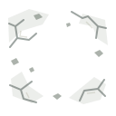
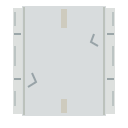
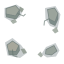
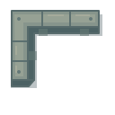

01 / 五張基準主題，兩種底色
左右使用同一份透明 SVG，檢查輪廓與深淺背景上的辨識度。
STUDY 01
卡茂・恩德瓜
實齡46，外貌約34歲；無角鱗。
視覺草案／未載外觀均為美術提案
深底
淺底
STUDY 02
薩米爾・卡恩
實齡45，看似60歲。
視覺草案／未載外觀均為美術提案
深底
淺底
STUDY 03
堅盾-I型
公版雙足；左散紋吼砲、右凡鐵連吼、軀幹複合裝甲。
視覺草案／未載外觀均為美術提案
STUDY 04
釜山城邦
山坡、貨櫃港、彩幡與黑金機庫。
視覺草案／未載外觀均為美術提案
深底
淺底
STUDY 05
靜海修船塢
白色艙板、吊架與船腹下的修船工。
視覺草案／未載外觀均為美術提案
02 / 縮小後，還認得誰？
卡茂・恩德瓜 · 48px
卡茂・恩德瓜 · 64px
卡茂・恩德瓜 · 96px
薩米爾・卡恩 · 48px
薩米爾・卡恩 · 64px
薩米爾・卡恩 · 96px
03 / 戰場辨識與一次性特效
正方俯視地格；圓標、HP、選取框及範圍色塊為展示示意。檢查地格與特效是否搶過單位。

地面

道路

瓦礫

掩體
友
尚未播放
友
尚未播放
友
尚未播放
三種特效只在按鈕操作後播放一次；結束後露出單位。系統偏好減少動態時採短暫淡出，不做位移或縮放。
04 / 同題三套造型
同一堅盾、同一釜山；材質與形狀有別，未載細節均為美術提案。讀畫風說明與色票
05 / 同一接點，實際換件
預設可還原角色與機甲；自由試裝是視覺示意，不改正史或遊戲數值。
人物換件
機甲換件
機體左在畫面右。展開中層查看零件；武器與手臂各自控制。單看不改勾選偏好。